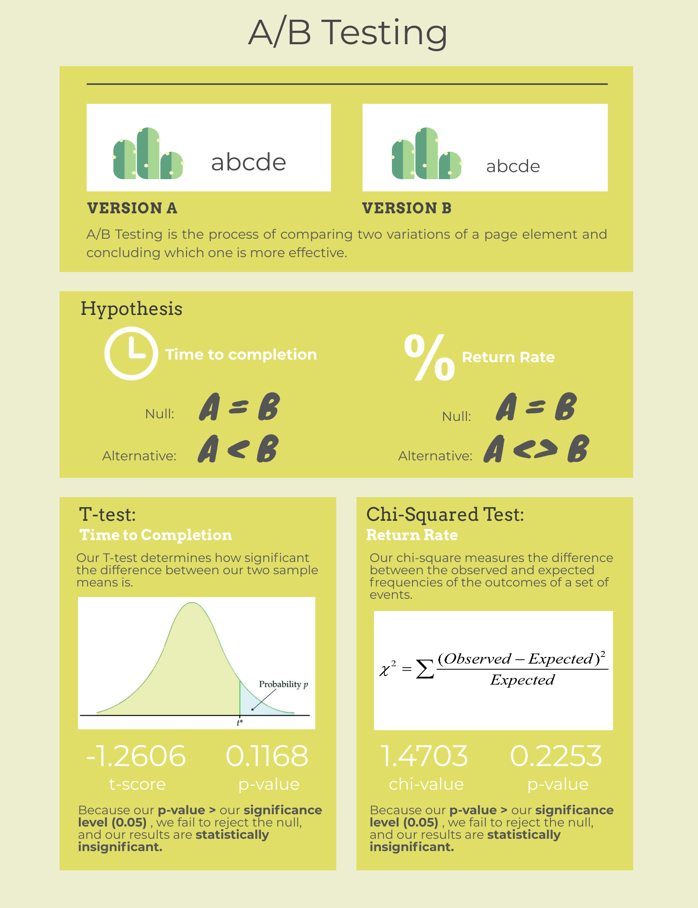

Can a small change in the design of a website change the way consumers navigate through it?
For the UI/UX class at Brown, students were asked to make 2 different versions of a online cacti store.
The goal is to perform an A/B test and statistical analysis to determine if these changes
impact the time to complete the task of ordering $150 worth of cacti or the return rate (the
number of times the user returns to the homepage).
Version A
Version B
Hypotheses
Time To Completion
Null: the time to complete the task in version A is the same as the time to complete it in version B.
Alternative: the time to complete the task in version A is lower than the time to complete it in version B because the larger font increases visibility of the prices and thus,
the user can add $150 worth of cacti faster.
Return Rate
Null: the return rate in version A equals the return rate in version B.
Alternative: version A's return rate will not equal B's return rate because version's A font size is larger and therefore has a better visibility
(which would make version A have a lower return rate).
Data Collection
To perform my A/B Test, I sent the link to my website to a random sample of other UI/UX students. This link opened version A half of the time and
version B, the other half.
Additionally, I coded some functions in python to compute a Chi-Squared test and a T-test on the different sets of data collected.
Then, I extracted and filtered the logs of the website and transferred the data into an excel file to calculate the time it took each user to
complete the task, and how many times an user returned to the homepage (or not) in the two different versions.
These logs recorded the interactions of 25 students.
Finally, I ran the Chi-Squared test and the T-test on the data collected.
Analysis
So... were the alternative hypotheses right?
Time To Completion
When a user clicks on a link, a log with a pageload time, session id, and click time is generated.
Thus, to calculate the time to complete the task for the different users, I substracted the last clicktime
from the first page load time of each different user to get the difference in miliseconds. If the user was
using version A, I would record these miliseconds in a column for version A and vice versa.
With this data, I performed a two sample t-test for the difference of means. I got a t-score of -1.2606 and a
p-value of 0.1168. However, because my p-value is less than my significance level of 5%, I failed to reject the
null hypothesis. Thus, my results are statistically insignificant (there is a doubt as to whether
the alternative hypothesis will repeat itself in further trials).
Unfortunately, we cannot conclude wether the time to complete the task version A is less than or equal to the time to
complete it in version B. This can be because our sample size is not big enough to display statistically significant results.
Return Rate
The logs also provide information about whether or not a user returned to the homepage after going to the checkout page. We
prefer a low return rate because if the user does not need to return to the homepage after going to checkout, it means that it
was easy and clear for them to complete the task effectively on the first try.
I created the following table to manually count how many users returned to the homepage and how many did not:
Return
No Return
Version A
10
2
Version B
8
5
On first sight, it looks like version A has a lower return rate than version B (or that they have different return rates and thus,
our alternative hypothesis is true). Nonetheless, I ran a Chi-Squared test and obtained
a Chi-Squared value of 1.470 and a p-value of 0.225. Again, because my p-value is less than my significance level of 5%, I failed to reject the
null hypothesis. Thus, my results are statistically insignificant, and I cannot conclude that version A has a different return rate than version B.
Infographic + Takeaways

Takeaways
I believe the biggest limitation for the results of my study was that my sample size was not large enough to
produce statistically significant results. Additionally, even though the selection of students from my UI/UX
class was random, all the users had similar demographics.
Because my results are statistically insignificant for both the T-test and the Chi-Squared test, I cannot
draw any conclusions about design principles. However, I do believe that increasing visibility and legibility
of a website can decrease the time to completion and return rate. We'll see next time...